R code for Bayesian CPUE time series standardisation using INLA
Note that we are using a data file that has already been explored and modified to remove outliers. Read the introduction to the model to see where to find the original data file and explanation on data exploration
Data exploration
Check outliers
The plots below suggest that there are no outliers in the dataset

Normality and homogeneity of variance
The plots below show that as catches and effort increase, so does the variance. This suggest a departure from the homogeneity of variance.
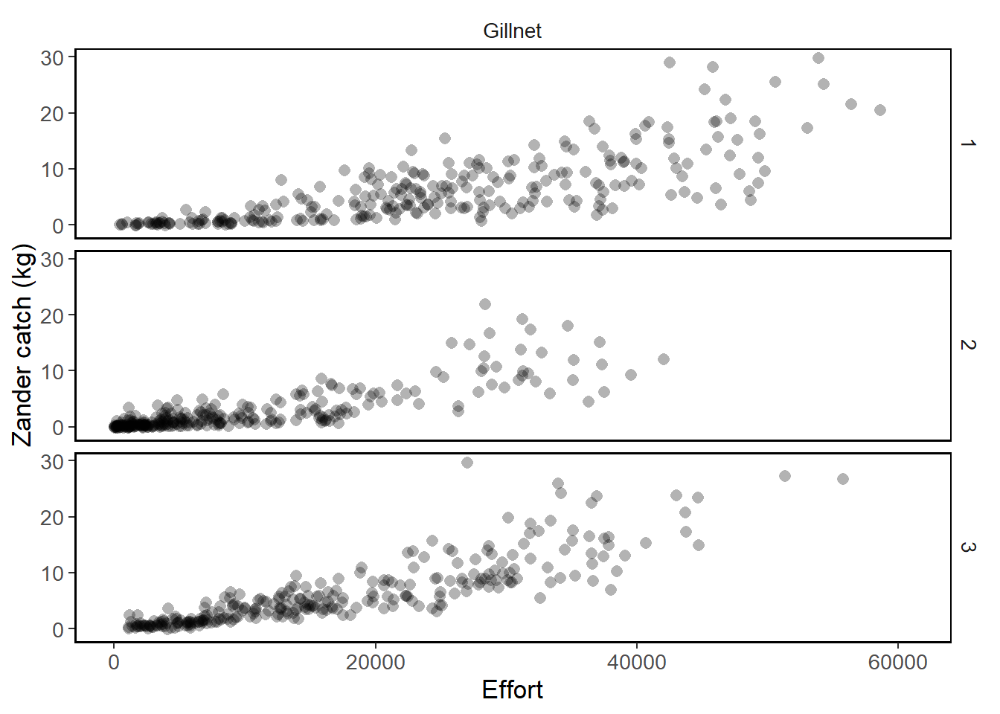
MODEL
Our aim is to Standardise pikeperch gillnet catch (kg) as a function of effort, station, years and months within years. We want to get a standardised time series of abundance. For that we will apply (Bayesian) INLA model for time-series analysis with a random walk model of order 1 (rw1). This model has 2 residual components, trend due to time (year) and pure noise
Fit increasingly complex models
We start with an intercept only model. Catch is modelled as a function of year, whereas ‘rw1’ part imposes a temporal trend. We fit a gamma distribution using INLA. A gamma distribution is strictly positive (no zeros) and skewed (like our catch data)
# Create a formula
f1 <- Catch ~ + f(Year, model = "rw1")
#fit a model
I1 <- inla(f1,
control.compute = list(dic = TRUE), #estimate dic for model comparison
family = "Gamma",
data = zan)
# Plot the time(year) trend
Yearsm <- I1$summary.random$Year
Fit1 <- I1$summary.fitted.values[,"mean"]
par(mfrow = c(1,1), mar = c(5,5,2,2), cex.lab = 1.5)
plot(Yearsm[,1:2], type='l',
xlab = 'Year',
ylab = 'Random walk trend',
ylim = c(-1, 1))
abline(h=0, lty=3)
lines(Yearsm[, c(1, 4)], lty=2)
lines(Yearsm[, c(1, 6)], lty=2)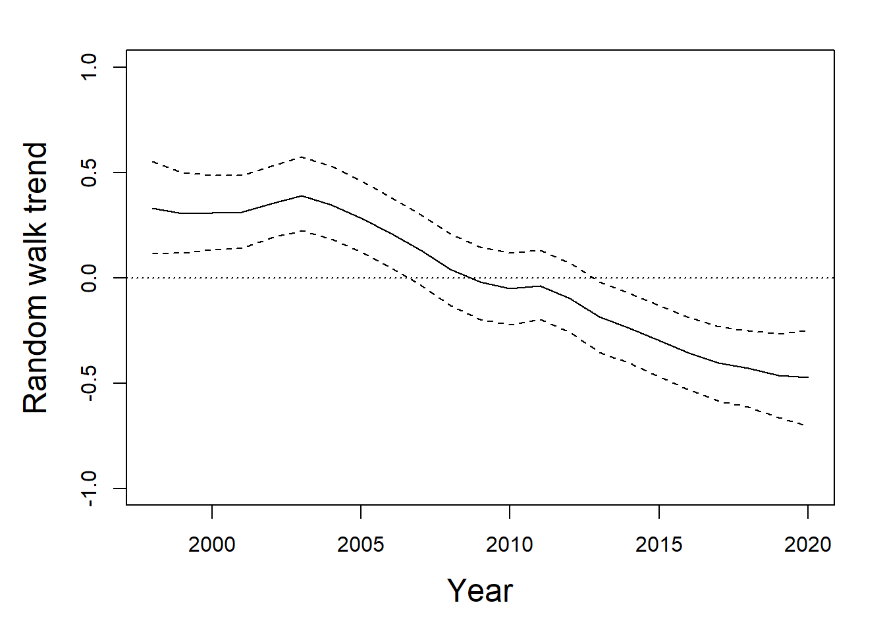
The result above shows that if we only look at one trend, we see decreasing catches through time. But effort also might have changed, so we need to include effort in the model.
#create a formula with effort
f2 <- Catch ~ Effort + f(Year, model = "rw1")
#fit a model
I2 <- inla(f2,
control.compute = list(dic = TRUE),
family = "Gamma",
data = zan)
#compare two models using a criterion similar to AIC
round(I1$dic$dic,0) #4179[1] 4179round(I2$dic$dic,0) #3532 <- including Effort improves fit[1] 3532#And plot the trend
Yearsm <- I2$summary.random$Year
plot(Yearsm[,1:2], type='l',
xlab = 'Year',
ylab = 'Random walk trend',
ylim = c(-0.2, 0.2) )
abline(h=0, lty=3)
lines(Yearsm[, c(1, 4)], lty=2)
lines(Yearsm[, c(1, 6)], lty=2)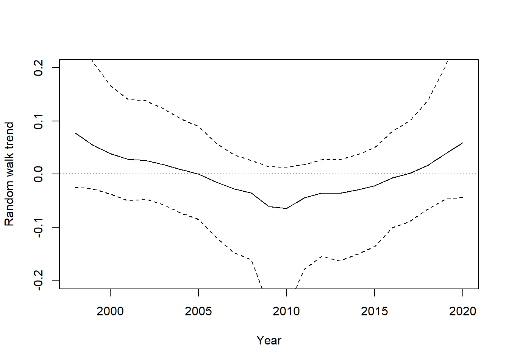
Now the trend is clearly different. This is because we are not including effort in the model, which is important. However, we also need to account for potentially different trends across months. So now we will nest month within a year
#create a formula
f3 <- Catch ~ Effort +
f(Year,
model = "rw1") +
f(Mon,
model = "rw1", cyclic = TRUE)
#fit the model
I3 <- inla(f3,
control.predictor = list(compute = TRUE),
control.compute = list(dic = TRUE),
family = "gamma",
data = zan)
#compare with the previous model
round(I2$dic$dic,0) #3525[1] 3532round(I3$dic$dic,0) #3203 <- including month improves fit[1] 3203#plot the trend, but this time we plot it for years and months
Fit3 <- I3$summary.fitted.values[,"mean"]
par(mfrow = c(1,2), mar = c(5,5,2,2), cex.lab = 1.5)
Yearsm <- I3$summary.random$Year
plot(Yearsm[,1:2], type='l',
xlab = 'Year',
ylab = 'Random walk trend',
ylim = c(-1, 1) )
abline(h=0, lty=3)
lines(Yearsm[, c(1, 4)], lty=2)
lines(Yearsm[, c(1, 6)], lty=2)
Monsm <- I3$summary.random$Mon
plot(Monsm[,1:2], type='l',
xlab = 'MonthInYear',
ylab = '',
ylim = c(-4, 4) )
abline(h=0, lty=3)
lines(Monsm[, c(1, 4)], lty=2)
lines(Monsm[, c(1, 6)], lty=2)
We can see that catches change a lot during the year and are low in summer months. So we definitely need to include month in the model. Since we have several stations, we probably also need to include stations in the model.
# create a formula with station as a random term
f4 <- Catch ~ Effort +
f(Year,
model = "rw1") +
f(Mon,
model = "rw1", cyclic = TRUE) +
f(fStn, model = "iid")
#fit the model
I4 <- inla(f4,
control.predictor = list(compute = TRUE),
control.compute = list(dic = TRUE),
family = "Gamma",
data = zan)
#compare with the previous model
round(I3$dic$dic,0) #3203[1] 3203round(I4$dic$dic,0) #2977 <- including station improves fit[1] 2977#Plot trend across years and months
Fit4 <- I4$summary.fitted.values[,"mean"]
par(mfrow = c(1,2), mar = c(5,5,2,2), cex.lab = 1.5)
Yearsm <- I4$summary.random$Year
plot(Yearsm[,1:2], type='l',
xlab = 'Year',
ylab = 'Random walk trend',
ylim = c(-1, 1) )
abline(h=0, lty=3)
lines(Yearsm[, c(1, 4)], lty=2)
lines(Yearsm[, c(1, 6)], lty=2)
Monsm <- I4$summary.random$Mon
plot(Monsm[,1:2], type='l',
xlab = 'MonthInYear',
ylab = 'Random walk trend',
ylim = c(-3, 3) )
abline(h=0, lty=3)
lines(Monsm[, c(1, 4)], lty=2)
lines(Monsm[, c(1, 6)], lty=2)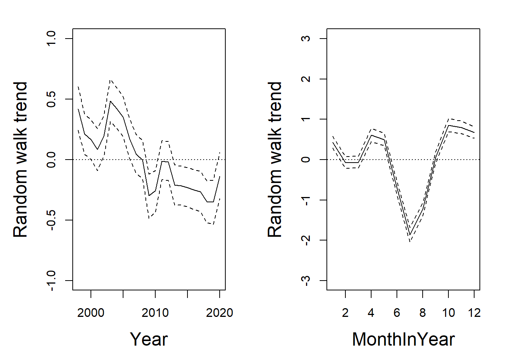
Explore the best model
Now we look at the Bayesian residuals
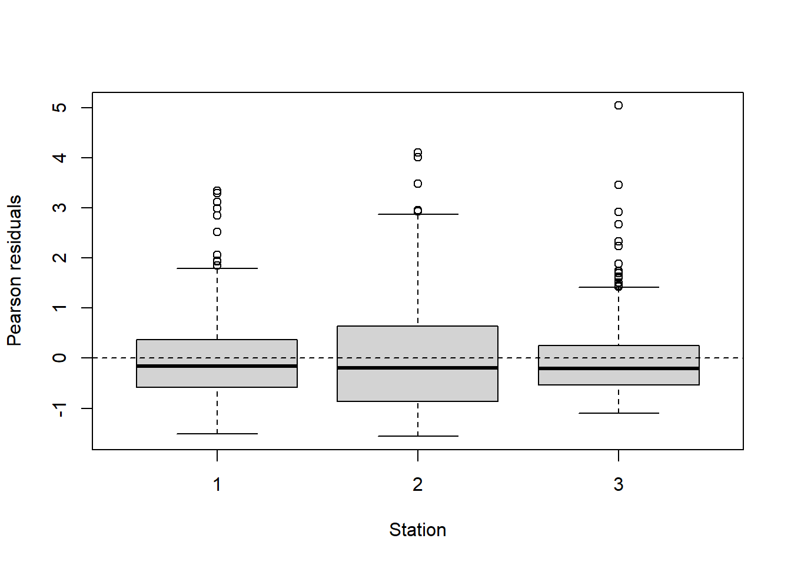
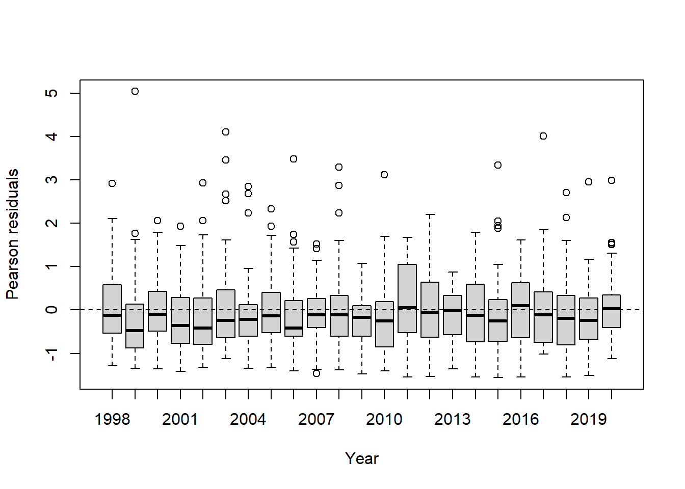
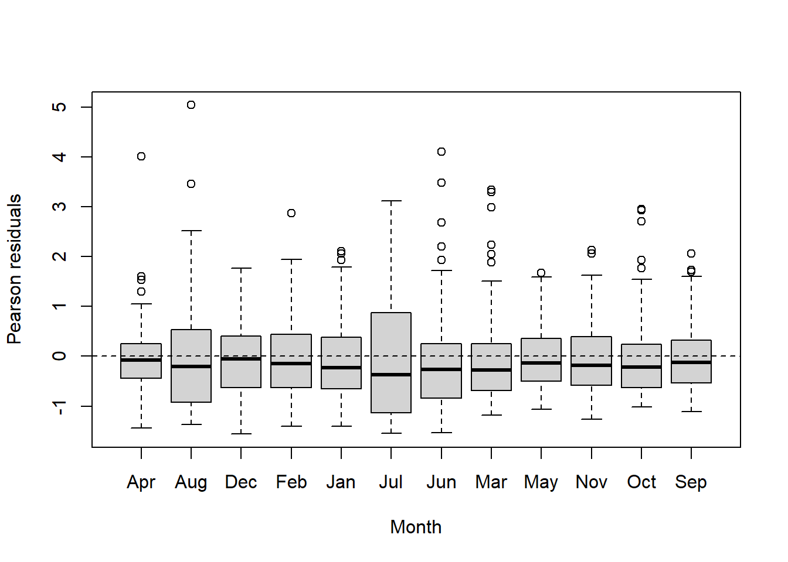
These residuals look ok. However, if we fit residuals versus effort we see a strange non linear pattern, which suggests that the model does not fully fit. We will then plot it for each station and find that there seem to be different residual and therefore likely also CPUE trends in different stations.
`geom_smooth()` using method = 'loess' and formula = 'y ~ x'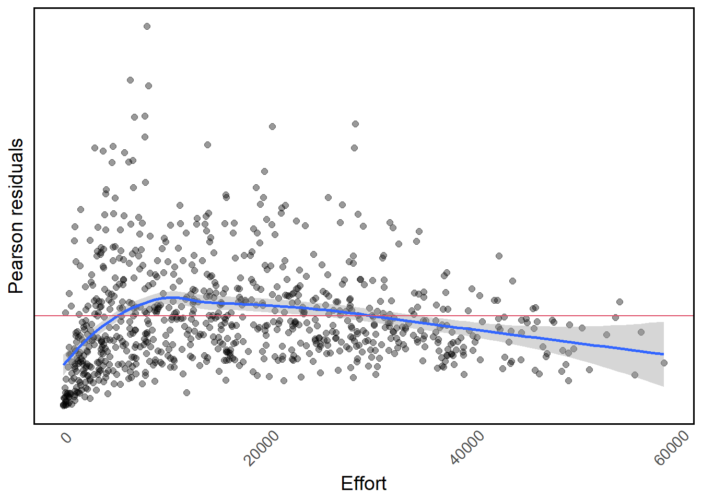
`geom_smooth()` using method = 'loess' and formula = 'y ~ x'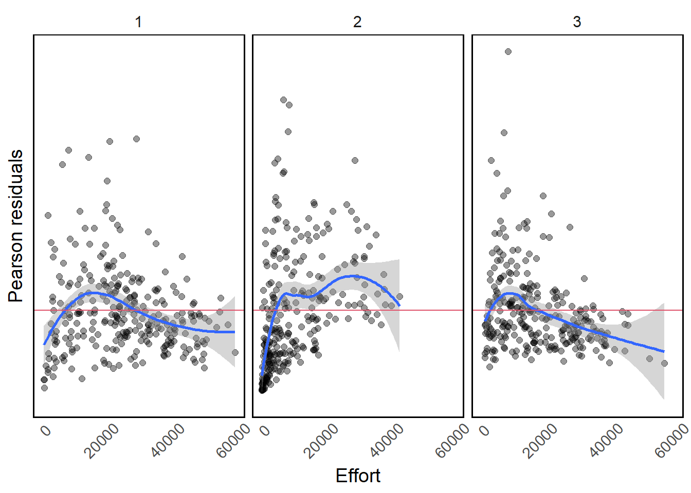
To solve this problem we make station a fixed effect and add an interaction with effort to capture non-linearity. If different stations have different catch trends this interaction should be included. So we define a yet another model with Effort * fStn interaction and fit it.
#define the model
f5 <- Catch ~ Effort * fStn +
f(Year,
model = "rw1") +
f(Mon,
model = "rw1",
cyclic = T)
#fit the model
I5 <- inla(f5,
control.predictor = list(compute = TRUE),
control.compute = list(config = TRUE, dic = TRUE),
family = "Gamma",
control.family = list(link = "log"),
data = zan)
#compare wit the previous model
round(I4$dic$dic,0) #2977 [1] 2977round(I5$dic$dic,0) #2889 <- big improvement in fit...[1] 2889#plot trends
Fit5 <- I5$summary.fitted.values[,"mean"]
par(mfrow = c(1,2), mar = c(5,5,2,2), cex.lab = 1.5)
Yearsm <- I5$summary.random$Year
plot(Yearsm[,1:2], type='l',
xlab = 'Year',
ylab = 'Random walk trend',
ylim = c(-1, 1) )
abline(h=0, lty=3)
lines(Yearsm[, c(1, 4)], lty=2)
lines(Yearsm[, c(1, 6)], lty=2)
Monsm <- I5$summary.random$Mon
plot(Monsm[,1:2], type='l',
xlab = 'MonthInYear',
ylab = 'Random walk trend',
ylim = c(-3, 3) )
abline(h=0, lty=3)
lines(Monsm[, c(1, 4)], lty=2)
lines(Monsm[, c(1, 6)], lty=2)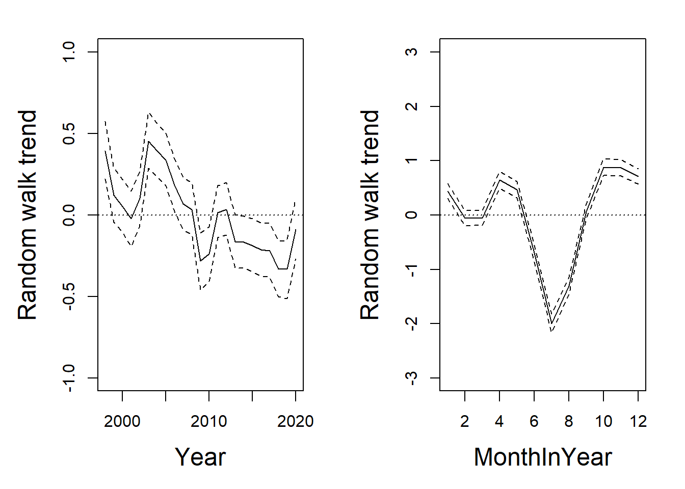
Now we look at the residuals of our new model
# Get the fitted values and Pearson residuals
N <- nrow(zan)
mu2 <- I5$summary.fitted.values[1:N,"mean"]
r <- I5$summary.hyperpar["Precision parameter for the Gamma observations", "mean"]
VarY2 <- mu2^2 / r
E2 <- (zan$Catch - mu2) / sqrt(VarY2)
# Plot residuals versus fitted values.
par(mfrow = c(1, 1))
plot(x = mu2,
y = E2,
xlab = "Fitted values",
ylab = "Pearson residuals")
abline(h = 0, lty = 2, col = 1)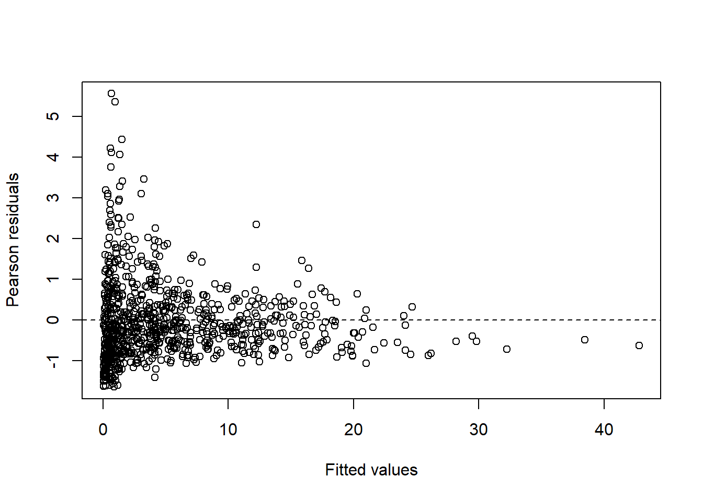
# Plot residuals versus station
boxplot(E2 ~ Station,
ylab = "Pearson residuals",
data = zan)
abline(h = 0, lty = 2)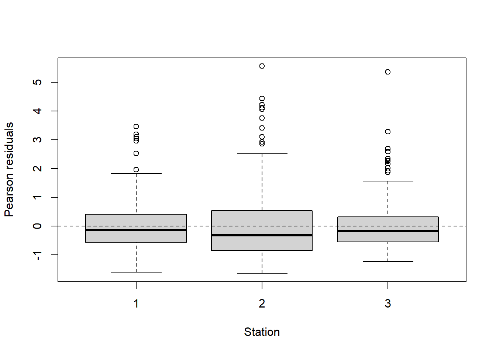
# Year
boxplot(E2 ~ Year,
ylab = "Pearson residuals",
data = zan)
abline(h = 0, lty = 2)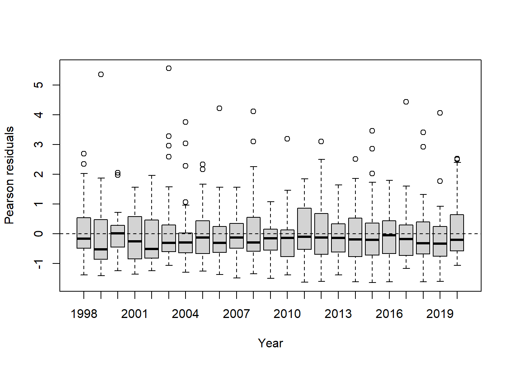
# Month
boxplot(E2 ~ Month,
ylab = "Pearson residuals",
data = zan)
abline(h = 0, lty = 2)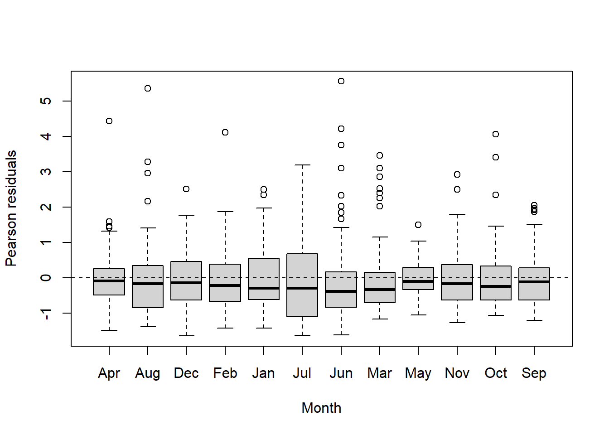
# Residuals versus effort
zan$E2 <- E2
resplot2 <- ggplot() +
geom_point(data = zan, alpha = 0.4, size = 2,
aes(y = E2 ,
x = Effort)) +
geom_smooth(data = zan,
aes(y = E2,
x = Effort)) +
xlab("Effort") + ylab("Pearson residuals") +
theme(text = element_text(size = 12), legend.position="none") +
theme(axis.text.x = element_text(size = 11, angle = 45, hjust = 0.9)) +
My_theme +
geom_hline(yintercept = 0, col = 2)
resplot2`geom_smooth()` using method = 'loess' and formula = 'y ~ x'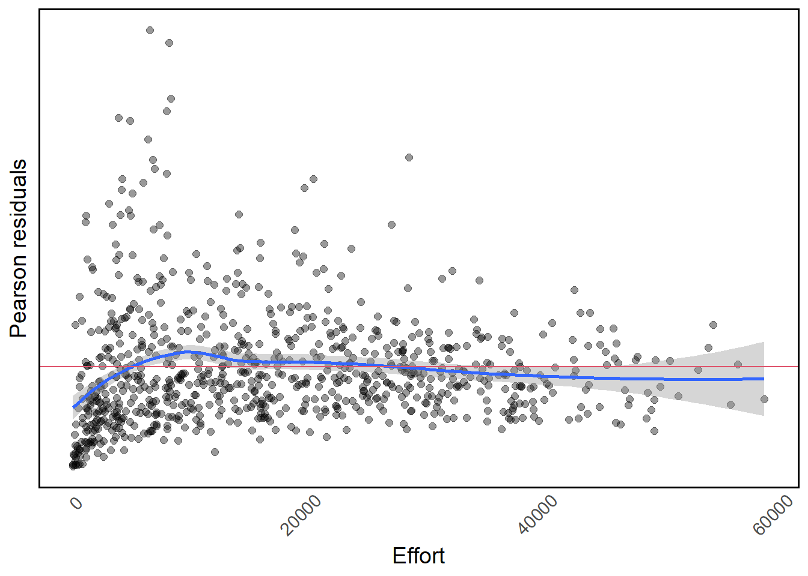
The final plot shows that the significant nonlinear pattern in residuals is mostly gone (uncertainty ranges include zero).
Plot model outputs
First we plots the overall temporal trend in years and months
# Plot temporal effects
p1 <- bind_rows(
I5$summary.random$Year %>%
select(Year = 1, mean = 2, lcl = 4, ucl = 6) %>%
mutate(Model = "rw1")
) %>%
ggplot(aes(x = Year, y = mean, ymin = lcl, ymax = ucl)) +
geom_ribbon(alpha = 0.2, fill = "forestgreen") +
geom_line(colour = "forestgreen") + My_theme +
geom_hline(yintercept=0, linetype="dashed",
color = "firebrick2", size=0.4) +
ggtitle("Year") +
theme(legend.position = "none")
ggplotly(p1)p2 <- bind_rows(
I5$summary.random$Mon %>%
select(Mon = 1, mean = 2, lcl = 4, ucl = 6) %>%
mutate(Model = "rw2")
) %>%
ggplot(aes(x = Mon, y = mean, ymin = lcl, ymax = ucl)) +
geom_ribbon(alpha = 0.2, fill = "dodgerblue2") +
geom_line(colour = "dodgerblue2") + My_theme +
geom_hline(yintercept=0, linetype="dashed",
color = "firebrick2", size=0.4) +
ggtitle("Month within Year") +
theme(legend.position = "none")
ggplotly(p2)Plot catch versus effort
Here we plot the model output where we show catch as a function of effort for each station. Note that these predictions will be shown for one selected year (year 2002 in this case) and month (September), whereas data scatterplot shows the full data.

Plot CPUE through time
Now we plot CPUE through time for a selected station (station 1) and selected effort level (20K), for all months
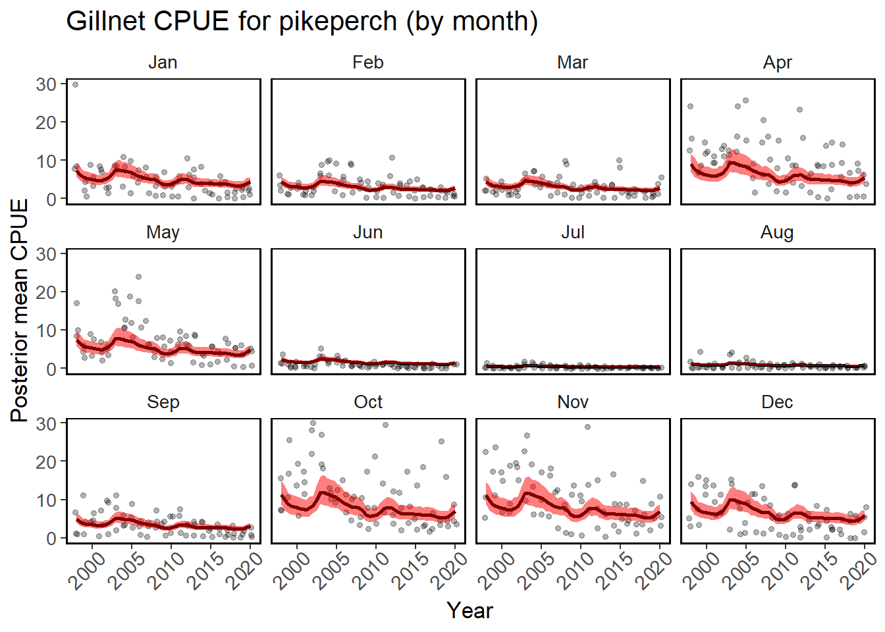